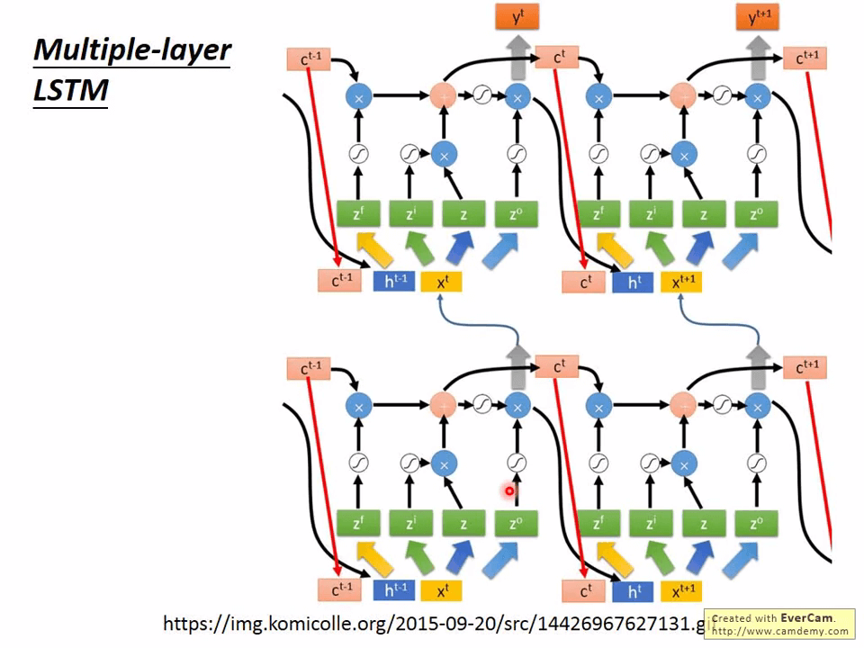
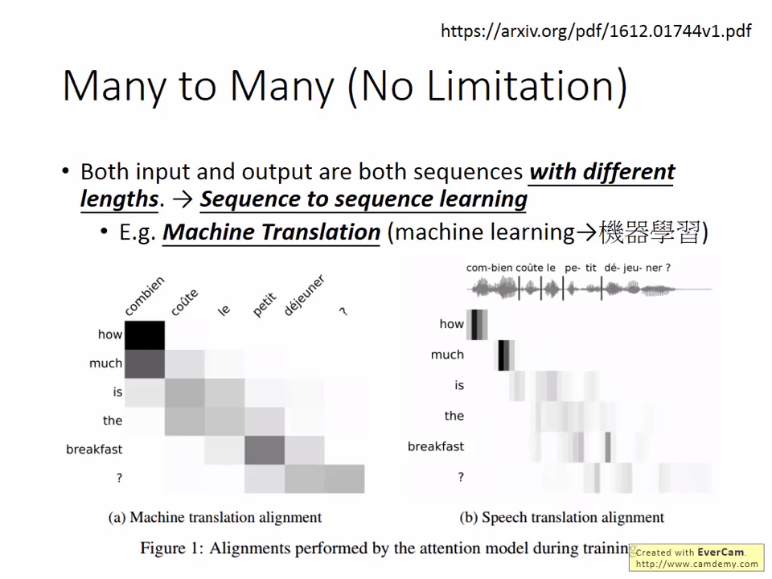
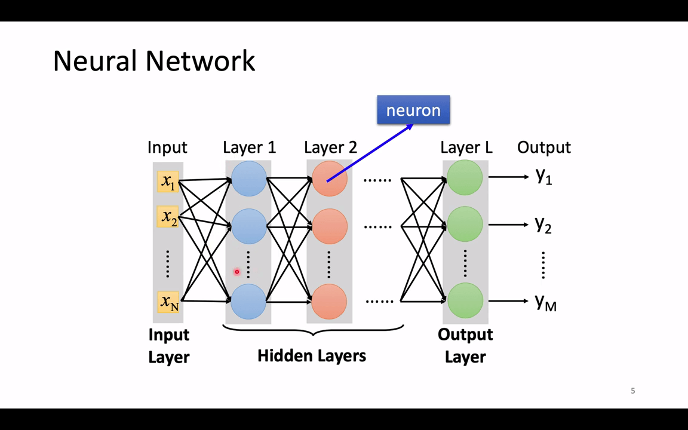
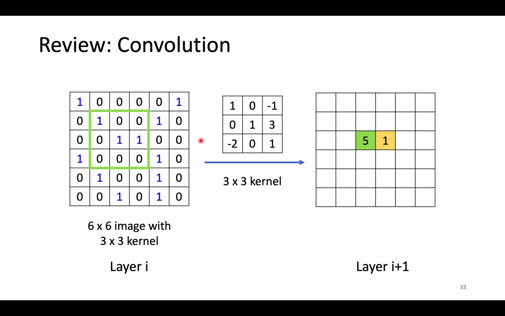
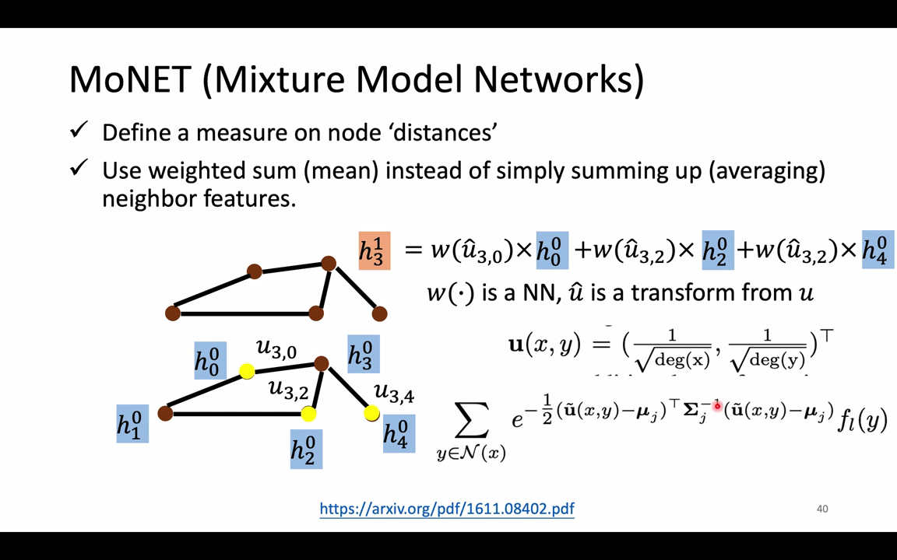

Preparation
【機器學習 2021】自注意力機制 -Self-attention- -上-
在之前的问题（预测观看人数、图像分类）中，输入的是一个向量 vector，输出的是一个数值 Scalar 或类别 Class。
有些问题输入的是一个向量集 vectors（向量集中的向量长度可能不同）。
比如一串单词序列 ，可以使用独热编码来表示个单词，但此法无法得出各个单词之间的关系。
使用 Word Embedding 将词性相近的单词用一个向量表示。
取一段语音信号作为窗口，把其中的信息描述为一个向量（帧），滑动这个窗口就得到这段语音的向量集。
社交网络的每个节点就是一个人，节点之间的关系用线连接。每一个人就是一个向量，整个社交网络就是一个向量集。
分子上的每个原子就是一个向量（每个元素可用 One-hot 编码表示），分子就是一个向量集。
向量集中一个向量对应一个标签输出的情景：
- POS tagging 单词词性判断，如 I saw a saw，两个 saw 词性不同。
- 作业 2，给一段语音，判断说话的内容。
- 在社交网络中，向某个用户推荐商品（可能会买或者不买）。

整个向量集只对应一个标签的情景：
- 给一段句子，判断这个句子的语气是积极还是消极的。
- 作业 4，给一段语音，判断说话者是谁。
- 给一个分子结构图，判断这个分子组成的物质是否亲水。
由模型自行决定输出标签的数量：seq2seq，作业 5，机器翻译。
本节课只考虑第一种情景：向量集中一个向量对应一个标签。
Sequence Labeling
利用全连接网络，输入一个句子，输出对应单词数目的标签。当一个句子里出现两个相同的单词，并且它们的词性不同（例如：I saw a saw. 我看见一把锯子），这个时候就需要考虑上下文：利用滑动窗口，每个向量查看窗口中相邻的其他向量的性质。
但是这种方法不能解决整条语句的分析问题（固定的滑动窗口难以应用在长度不等的语句上），即语义分析。这就引出了 Self-attention 技术。
输入整个语句的向量到 self-attention 中，输出对应个数的向量，再将其结果输入到全连接网络，最后输出标签。以上过程可多次重复。
Transformer 起源于 2017 年的一篇 google brain 的又一篇神文《Attention is all you need》，至此由引领了在 NLP 和 CV 了又一研究热点。
在 Transformer 中一个非常关键的贡献就是 self-attention。就是利用输入样本自身的关系构建注意力模型。
Self-attention 层的上一层可以是输入层，也可以是隐藏层。每个输出 都与所有输入 相关。
Self-attention 层的作用就是找到向量集中各个向量中的关联性 。
计算关联性 的方法：
- Dot-product 中使用了 Transformer 的方法。把输入的向量分别乘以不同的矩阵 ，，最后得到关联性
- Additive
Self-attention 中又引入了三个非常重要的元素：Query、Key 和 Value。
假设 是一个输入样本序列的特征，其中 是输入样本个数（序列长度）， 是单个样本维度。
- Query：，其中
- Key：，其中
- Value：，其中
（ 分别乘上某个矩阵得到 ）
如求向量 与向量 的关联性 。根据 求得某个向量与所有向量关联性 后，再用 softmax 函数（Normalization 操作，也可以是其他激活函数，如 ReLU）：
将所得的 与 由向量本身计算得到的 相乘求得 。
根据分数（关联性）抽取重要信息。谁的分数（Value）越大，谁就更影响结果。
【機器學習 2021】自注意力機制 -Self-attention- -下-
Self-attention
Self-attention 层将输入 转换为输出 ，这个过程是可以并行计算的。
与求 相同的方法求得 。
由于用于得到 所乘的矩阵 都相同，所以可以将所有 合并成一个矩阵 ，通过一次矩阵运算得到所有的 ，分别合并称为 。
通过线性代数知识，。。
通过线性代数知识，， 就是 self-attention 层的输出。
这些参数的值要通过学习得到。
上述过程可总结为：
- 输入矩阵 分别乘以三个 得到三个矩阵
- 使 ，经过处理的到注意力矩阵
- 输出 ，即 ，其中， 为向量的长度。
Multi-head Self-attention
Multi-head Self-attention 是 Self-attention 的变种。考虑不同类型的相关性。计算完 后，再乘上 head 数的矩阵，得到更多分支。
这样得到的输出会有多个向量。最后再乘一个 矩阵得到最终的输出 。
Positional Encoding
Self-attention 机制没有考虑向量的位置信息。解决办法是在输入向量 中额外添加位置信息 。位置信息 的表示形式可以是：
- 人为设定
- 从数据中学习
论文[2003.09229] Learning to Encode Position for Transformer with Continuous Dynamical Model (arxiv.org) 阐述了各种模型得到的位置信息的表现形式。
Application
使用 Self-attention 机制的应用：
- Transformer: 1706.03762] Attention Is All You Need (arxiv.org)
- BERT: 1810.04805] BERT: Pre-training of Deep Bidirectional Transformers for Language Understanding (arxiv.org)
Widely used in Natural Langue Processing(NLP)!
Self-attention 在语音识别中的应用，一段语音是一个非常长的序列，计算量/存储量会非常大。将向量只考虑其周围的向量（Truncated Self-attention）。
在图像处理中的应用，把图像当作一个向量集来看待。每个像素点都是一个三维的向量（RGB）。
使用 Self-attention 机制用在图像处理方面的例子：
- Self-attention GAN: [1805.08318] Self-Attention Generative Adversarial Networks (arxiv.org)
- Detection Transformer (DETR): [2005.12872] End-to-End Object Detection with Transformers (arxiv.org)
Self-attention v.s. CNN
CNN 可以看作是简化版的 self-attention，self-attention 通过学习得到相应的 receptive field。
- On the Relationship between Self-Attention and Convolutional Layers: [1911.03584] On the Relationship between Self-Attention and Convolutional Layers (arxiv.org)
由于 self-attention 可以视作是 CNN 的超集，因此它的结构比 CNN 更复杂。更复杂的神经网络需要数量更加庞大的数据库才能得到更好的效果（在较小的数据库中容易过拟合）。
- An lmage is Worth 16x16 Words: Transformers for lmage Recognition at Scale: [2010.11929] An Image is Worth 16x16 Words: Transformers for Image Recognition at Scale (arxiv.org)
Self-attention 一般比 RNN 训练速度更快（便于获取周边向量且支持并行计算），目前很多 RNN 架构都换成了 self-attention 架构.
- Transformers are RNNs: Fast Autoregressive Transformers with Linear Attention: [2006.16236] Transformers are RNNs: Fast Autoregressive Transformers with Linear Attention (arxiv.org)
如果把 self-attention 机制放在图里，就变成了 GNN 的一种。
- Long Range Arena:A Benchmark for Efficient Transformers: 由于 self-attention 计算量很大，因此演变出多种形式试图减小训练速度，由于 self-attention 最早由 Transformer 提出，因此演变的很多形式都被命名为 XXformer。[2011.04006] Long Range Arena: A Benchmark for Efficient Transformers (arxiv.org)
- Efficient Transformers: A Survey: [2009.06732] Efficient Transformers: A Survey (arxiv.org)
Class Material
Extra Material
ML Lecture 21-1 Recurrent Neural Network -Part I-
RNN 应用的一个举例：Slot Filling 槽填充。智能订票系统。用户对机器输入一段话“I would like to arrive Taipei on Novmber 2nd.”，机器将这段话提取出关键词填入 Slot 中。
如何使用一个向量表示一个单词？独热编码。
- 独热编码后加一个维度用于表示词汇表中没有的词汇。
- 将单词的各个部分是否出现显示在向量中。
尝试将 slot filling 应用于 Feedforward network 中：
- 输入：一个单词（每个单词都用一个向量来表示）
- 输出这个单词最有可能出现在哪个 slots 中。
这样训练出来的结构不能考虑上下文对单词含义造成的影响。只考虑单词“Taipei”不能确定用户需要的是出发地还是目的地。
因此神经网络需要记忆。
Recurrent Neural Network (RNN)
每次输出的结果都会存在内存中。内存中的值也可被视作另一个输入。
假设这个模型所有 weight 都是 1，没有 bias，所有的激活函数都是线性函数。则对于输入序列 ，对应的输出序列为 。
改变序列顺序也会改变输出序列。
由于 memory 中的值可能不同，不同时期相同的输入可能会得到不同的输出。
这样的结构可以有很多层。
刚刚的结构也叫 Elman Network，也有跨层的 Jordan Network。据说 Jordan Network 性能更好些。
Bidirectional RNN

可以将序列反向再训练一遍，称之为 Bidirectional RNN。
Long Short-term Memory (LSTM)
LSTM 是一种特殊的神经网络结构，拥有 4 个输入，1 个输出。
输入：
- 通常的输入
- 由信号控制的 Input Gate，输入信号
- 由信号控制的 Forget Gate，输入信号
- 由信号控制的 Output Gate，输入信号
输入和门都会有一个激活函数（一般是 Sigmoid，便于将值取 0-1 之间，ReLU 在此性能较差）
经过 Forget Gate 后的值 ，因此 Forget Gate 中的 取 1 时 Memory 不遗忘，取 0 时 Memory 遗忘。
最后的输出值 。

举例，假设这个模型真实的情景是：
- 当 时，把 的值加到 memory 中。
- 当 时，重置 memory 的值（设为 0）。
- 当 时，将 memory 的值作为输出值。
使用一个 LSTM 神经元可以拟合出这样的函数（假设 w 值已经被训练好）。
因此 LSTM 的参数量是普通神经元的 4 倍。
把输入向量 拆分成 4 个向量 看。

向量在 LSTM 中的示意图。
LSTM 神经元可以有很多个。
还可以把 memory 中的值 和
上次的输出值 （称之为“peephole”）放到输入序列中。

多层，多个的 LSTM。
Keras 可以很好地实现它。
一般来说 RNN 就是指 LSTM。
Keras 支持 LSTM，GRU（比 LSTM 少一个门，据说性能与 LSTM 相当，而较少的参数量可以防止过拟合？），以及课程开始讲的最传统的 SimpleRNN。
ML Lecture 21-2 Recurrent Neural Network -Part II-
如上，对于一个 slot-filling 问题，我们希望网络能帮我们辨识出 arrive 对应的 other，Taipei 对应 dest（目的地）…则我们需要按时间顺序，输入这句话的这些单词，并且期望其输出为 上面的对象。
LSTM 同样使用梯度下降训练，其反向传播方法，是考虑了时间的，称为 Backpropagation through time (BRTT)。
RNN 很难训练，其 Loss 变化曲线可能不像通常那样随时间单调递减。
Razvan Pascanu (ICML’13) 的研究，RNN 的参数对应的损失函数是很陡峭的，因此难以训练。提出解决方案：引入 Clipping——当 gradient 大于某个数值时，就等于某个数值。
RNN 在不同时间内反复使用同样的东西，导致梯度爆炸（如 都取 时，第 层的输出极大）或梯度消失（如 都取 时，第 层的输出约等于 ）。
LSTM 可以解决梯度消失的问题，但是难以解决梯度爆炸的问题。
- Memory and input are added
- The influence never disappears unless forget gate is closed
GRU 是更简单版本的 LSTM：
- 相比于 LSTM，少了一个门（参数）
- 当 input gate 打开时，forget gate 就自动关闭
其他 LSTM 的变形：Clockwise RNN、Structurally Constrained Recurrent Network(SCRN)
-
Vanilla RNN Initialized with Identity matrix + ReLU activation function [Quoc V. Le, arXiv’15]
-
Outperform or be comparable with LSTM in 4 different tasks 在 4 项不同的任务中表现优于或与 LSTM 相当
之前提到的 Input 和 Output 都是有着相同长度的序列，RNN 可以做到不止这些。
Many to one
- 输入是一个向量序列，但是输出只有一个向量。
如 Sentiment Analysis 情感分析：从一段文本中判断这段文本的积极度。
Key Term Extraction 关键词提取：将序列按照顺序在不同时间点输入，最后一个时间点把输出拿出来，经过些处理，得到结果。
Many to Many (Output is shorter)
语音辨识中，RNN 解决了一般分类网络中没法解决的问题。在一段发音好棒棒中，正常的网络可能识别出好好好棒棒棒棒棒，然后可以通过Trimming去重得到输出好棒，但是这样就无法识别好棒棒。
如上，Connectionist Temporal Classification(CTC)提出了一个解决方案，在输出中增加空字符 。
此法需要穷举正确的答案（好 棒 ，好 棒 ，好 棒 ）。穷举可能会有一定成本，但是 CTC 中有一定巧妙解决方案。
Google 现在的语音辨识系统已经更改为CTC为基础的算法。
Many to Many (No Limitation)
Seq2Seq，举例：机器翻译。其基本思路如上。但是问题是不知道何时停止联想。
引出，其思路也有点类似 CTC，在训练中，添加一种输出，叫做===，代表“断”。

Beyond Sequence
- Syntactic parsing 句法分析
我们将树状图描述成一个序列，作为目标值。
Sequence-to-sequence Auto-encoder-Text
序列中的顺序很重要，”white blood cells destroying an infection“ 和 ”an infection destroying white blood cells“ 具有相同的 ”bag-of word“，但具有不同的意思。
输入原句，Encoder 输出嵌入后的向量(Embedding Vector)，再将嵌入向量输入解码器 Decode，争取让解码器输出原句，则编码成功。
这样，我们不需要对数据进行打标签，只需要大量文章就可以训练。
这个结构可以是多层 hierarchical 的，如上是 4 层的 LSTM 组合。

Attenttion-based Model
类似人脑，机器也有一个用于记忆的缓存区，可以在使用神经网络时，进行读和写的操作。
这个叫做Neural Turing Machine。

RNN v.s. Structured Learning
RNN，LSTM 与结构化机器学习（隐马尔可夫模型 HMM，条件随机场，结构化感知器/SVM）的比较：
| RNN，LSTM | Structured Learning |
|---|---|
| 单向的 RNN 不考虑整个序列 | 使用 Viterbi，所以考虑整个序列：Bidirectional RNN` 也可考虑整个序列 |
| Cost 和 error 并不总是相关的 | 可以明确地考虑标签的依赖性：Cost 是 error 的上界 |
| 可以深度学习 | 难以深度学习 |
可以将 RNN、LSTM 与 Structured Learning 结合在一起。
- input 的 feature 先通过 RNN 与 LSTM；
- 其输出作为 HMM 等的输入；
- 二者可以一起 Learn 的，可以一起梯度下降。
常见的结合应用如下：
- Speech Recognition: CNN/LSTM/DNN + HMM
- Semantic Tagging: Bi-directional LSTM + CRF/Structured SVM
李老师认为，其实 structure learning 并不过时，GAN 就是一种 structure learning (Energy-based model)。
李老师认为：Deep and structure is future. 下学期会开有关的课程 Machine learning and having itdeep and structured (MLDS)。
-TA 補充課- Graph Neural Network -12- -由助教姜成翰同學講授-
Outline
- Introduction
- Roadmap
- Tasks, Dataset, and Benchmark
- Spatial-based GNN
- Graph Signal Processing and Spectral-based GNN
- Graph Generation
- GNN for NLP

图的举例:
- 蛋白质结构图
- 地铁路线
- 分子式
- 红黑树
- [1802.03480] GraphVAE: Towards Generation of Small Graphs Using Variational Autoencoders (arxiv.org)
分析化学式生成对治疗新冠有效的物质。
分类器：根据社交圈判断谁是凶手。

GNN 简单来说就是 Graph + Nerual Networks,关键问题就是将图的结构和图中每个节点和边的特征转化为一般的神经网络的输入（张量）。
可以做的事情主要包括：分类和生成
- How do we utilize 利用 the structures and relationship to help our model? 关系杂
- What if the graph is larger, like 20k nodes? 模型大
- What if we don’t have the all the labels? 无标签
- 半监督学习：Unlabeled Node > Labeled Node
- 思想是 A node can learn the structure from its neighbors（近朱者赤，近墨者黑）, but how?
- 模仿卷积的过程，卷积中和 filter 相乘相加后就得到 feature map。如何把卷积操作移植到 Graph 上？
- Solution 1: Generalize the concept of convolution (corelation) to graph >> Spatial-based convolution 基于空间的卷积
- 把 CNN 的操作 Generalize 到 GNN 上
- Solution 2: Back to the definition of convolution in signal processing >> Spectral-based convolution 基于频域的卷积
- 借鉴信号处理中做法来进行卷积操作（先将信号从时域转到频域）
- Solution 1: Generalize the concept of convolution (corelation) to graph >> Spatial-based convolution 基于空间的卷积
GNN Roadmap
- Theoretical analysis: GIN, GCN
- 偏理论分析的模型：图同构网络 GIN（基于空间），GCN（基于谱图）
- Spatial-based convolution 基于空间的卷积
| Aggregation | Method |
|---|---|
| Sum | NN4G |
| Mean | DCNN, DGC, GraphSAGE |
| Weighted sum | MoNET, GAT, GIN |
| LSTM | GraphSAGE |
| MaxPooling | GraphSAGE |
- Spectral-based convolution 基于频域的卷积
- ChebNet - GCN - HyperGCN
GAT 和 GCN 较为常用。
- Tasks 任务（将这些模型用于？）
- Semi-supervised node classification
- Regression
- Graph classification
- Graph representation learning
- Link prediction
- Common dataset 公有数据集
- CORA: citation network. 2.7k nodes and 5.4k links
- TU-MUTAG: 188molecules with 18 nodes on average
主要用在 NLP 问题上。

Spatial-based Convolution
Terminology：术语
-
Aggregate：用 neighbor feature update 下一层（Layer i + 1）的 hidden state
-
Readout：把所有 nodes 的 feature 集合起来代表整个 graph（类似 LSTM 把整个句子向量压缩为一个向量）
NN4G
：第 layer 层 第 node 个节点。
Input layer 经过 embedding（如 ）之后到 Hidden layer 0。将其相邻的节点 () 相加然后乘以权重（）再加上之前 Input layer 的原始输入 () 用于得到新的参数 ()。
关于为什么要相加的问题：如果不用相加的话，你就很难去处理节点间邻居数量不同这个巨大的区别。另外，相加是最简单也是被证实最有效的利用邻点信息的方法。
整个图的表示是通过求出每一层整个图中的顶点间的特征均值，然后各自乘以相应的权重再把每一层得到的结果相加得到整个 graph 的 feature 。
DCNN
每一层的更新方式：
如第一层，更新某个节点首先找到与它距离为 1 的节点（也就是邻居节点, ），然后用原始的输入相加取平均值 () 再乘以权重 ()。
第二层，更新更新某个节点首先找到与它距离为 2 的节点（这样也包括了它自自己本身），然后用原始的输入相加取平均值再乘以权重。
这样就可以将每一层的节点特征组成一个矩阵，然后叠在一起。
将某个节点的 乘上某个权重 ，得到特征 。
DGC
与 DCNN 中 Readout 过程不同，将 加起来。
MoNET

上面两个方法在处理节点和节点之间的关系的时候都是用加法，其实忽略节点之间如果边有权重，这样是不合理的，因此这个方法就是用来解决不同权重边的方法。
引入权重 定义某个节点与某个节点之间的距离。
其中的 deg 表示的是节点的度。无向图当中也就是说有几个和它相连接的节点。这里定义的距离公式可以有不同的。也就是给每个节点不同的权重 weighted sum。
由神经网络得到， 由 变换而来。
GraphSAGE
- SAmple and aggreGatE
- Can work on both transductive and inductive setting
- GraphSAGE learns how to embed node features from neighbors
这个方法在提取邻居信息上提出了三种方式：AGGREGATION: mean, max-pooling（对邻居的 feature 作 max-pooling）, or LSTM
GAT
- [1710.10903] Graph Attention Networks (arxiv.org)
- 不做 weight sum，而让邻居自己去学，对邻居作 Attention。
GIN
这个文章提供了证明什么方法是 work 的，什么方法是无用的。
要用 sum，不要用 mean 或 max。

-TA 補充課- Graph Neural Network -22- -由助教姜成翰同學講授-
推荐的一个网站。
看不懂，寄！
ChebNet
GCN
Benchmark tasks
一些基准测试：
图分类：对数据集 MNIST 和 CIFAR10 进行超分辨率处理。
边分类：旅行家问题

Graph Generation
- VAE-based model: Generate a whole graph in one step
- GAN-based model: Generate a whole graph in one step
- Auto-regressive-based model: Generate a node or an edge in one step
VAE-based model
- [1802.03480] GraphVAE: Towards Generation of Small Graphs Using Variational Autoencoders (arxiv.org)
GAN-based model
AR-based model
Summary and Take Home Notes
- GAT and GCN are the most popular GNNs
- Although GCN is mathematically driven, we tend to ignore its math
- GNN (or GCN) suffers from information lose while getting deeper
- Many deep learning models can be slightly modified and designed to fit graph data, such as Deep Graph InfoMax, Graph Transformer, GraphBert（效果不好）.
- Theoretical analysis must be dealt with in the future
- GNN can be applied to a variety of tasks